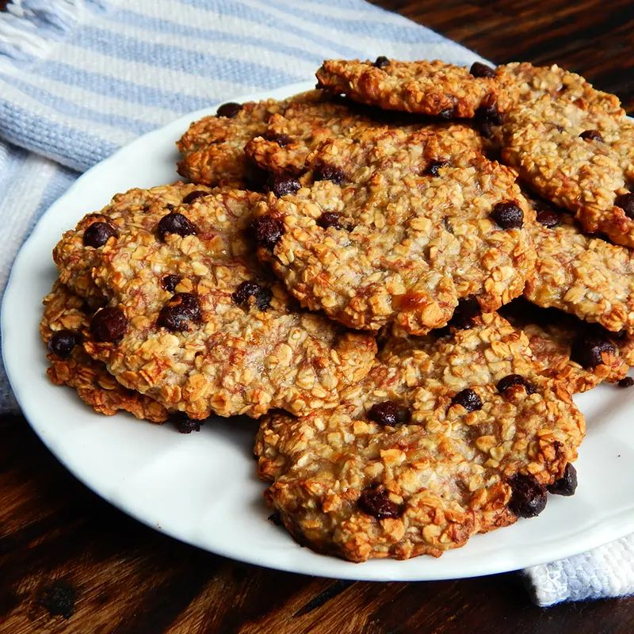

Galletitas de Avena Rápidas (sin horno)

Ingredientes (12 galletitas aprox.)
- 1 taza de avena instantánea (100 g)
- 2 cucharadas de mantequilla de maní o 60 g de mantequilla derretida
- 1 cucharada de miel o azúcar (15 g)
- Opcional: 2 cucharadas de chips de chocolate o pasas
Preparación
- En un bowl mezcla la avena con la mantequilla de maní (o mantequilla derretida) y la miel hasta obtener una masa manejable.
- Agrega chips de chocolate o pasas si deseas.
- Forma pequeñas porciones con las manos y aplástalas ligeramente sobre una bandeja.
- Refrigera por 30 minutos hasta que endurezcan. Sirve frío o a temperatura ambiente.